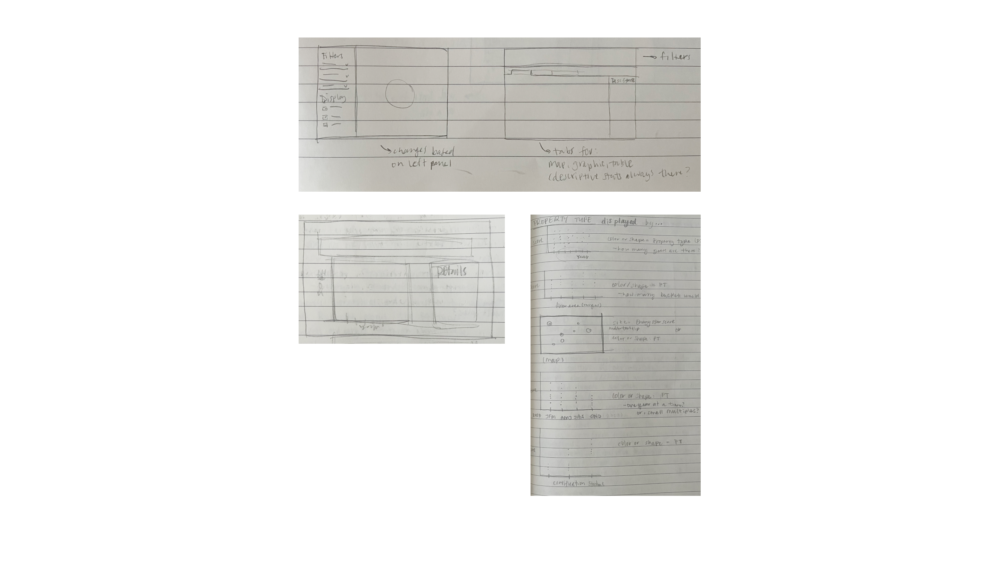
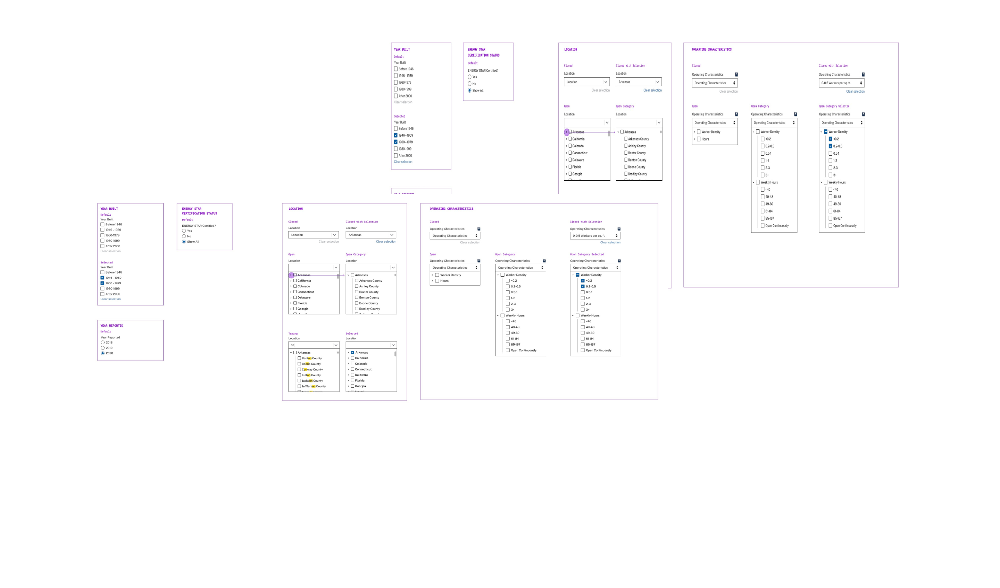

ENERGY STAR Portfolio Manager Data Explorer: A Case Study
The Client, the Ask, and the Team
ENERGY STAR is a joint energy efficiency program from the US Environmental Protection Agency (EPA) and Department of Energy (DOE). Their Portfolio Manager tool helps commercial building owners report and manage data about their buildings, things like energy use, size, age, etc.
In an effort to help guide policy decisions, the Portfolio Manager team wanted a tool to make this data public that was easy to use, offered a “customized” experience, and maintained buildings’ privacy.
I served as task lead and head designer and worked with a data scientist, GIS expert, front- and back-end developers, and our project director.
Gathering Requirements and Exploring Options
In lieu of generative user testing, we collected input from clients and colleagues to ideate around user needs. After these conversations, I sketched (and sketched, and sketched...) as a way to explore which features and visualization types we wanted to include, making sure to design the UX and UI in service of the underlying data.
At this stage we settled on 2 visualization types and developed a few layout options.

Low-Fidelity Wireframing
From sketches, we moved on to lofi wireframes. Our goals with these rounds of iterations were to decide on and refine the layout of the tool, settle of the key, must-have features, and begin to work with real data so we could stress test our ideas.
To that end, collaborated with our data scientist and developers as I produced lo-fi wireframes and took them through internal and external reviews.
By the end of that process we had settled on layout and key features, including filters panel and refined our visualizations.

Mid- and High-Fidelity Wireframing
To refine the included features in service of the users' experience and to finalize the tool's overall UX, I moved on to higher levels of fidelity in our wireframes.
Progressing those choices also allowed us to explore options for the design system we intended to use for the UI.

The Outcome: Final Site
To finalize our UI choices and release the site, I lead multiple rounds of user tests and interviews and then worked with our developer team to integrate user feedback.
After these final changes, we launched the site (available here: ENERGY STAR Portfolio Manager Data Explorer) and have been making continuous improvements, including adding new metrics and visualization types and optimizing for mobile.